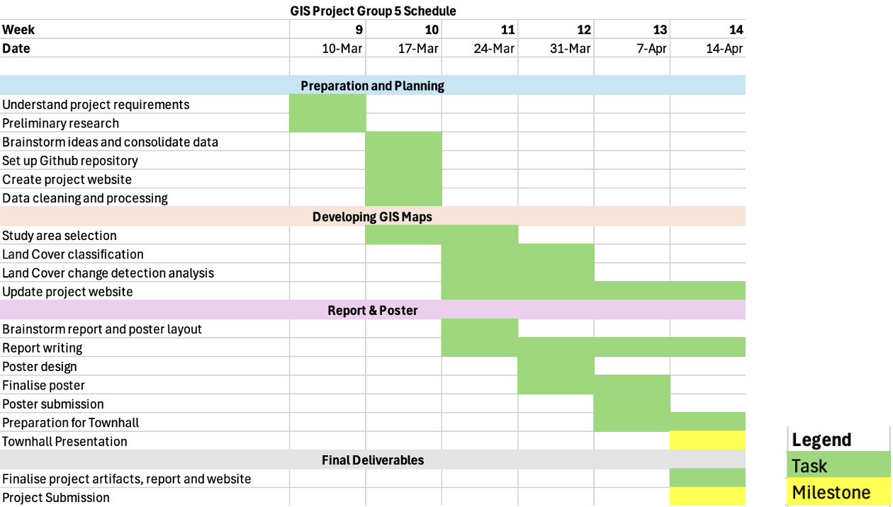

OVERVIEW
Introduction
Singapore is a small city with its unique attractions and natural habitats. Throughout the years, the annual mean temparature has rose by 0.24 degree celsius per decade. As such, over the past few years, Singapore has witnessed significant growth in solar panel deployment due to advancements in renewable energy and decreasing installation costs. Since the second quarter of 2023, the declining costs of solar installations have accelerated the adoption of solar panels across residential, commercial, and industrial sectors. In response to this, the government has continued to enhance its solar initiatives, such as the SolarNova program, to increase the nation’s renewable energy capacity and meet Singapore’s long-term sustainability goals. As more rooftops, open spaces, and reservoirs are utilized for solar panel installations, challenges related to land optimization, energy storage, and grid integration are becoming increasingly relevant, especially in Singapore’s land-scarce environment.
Solar energy deployment and efficiency monitoring are critical for sustainable urban planning and energy management. Solar potential assessments involve analyzing factors such as irradiance levels, panel efficiency, and land availability to determine optimal installation sites. Remote sensing and data analytics play a crucial role in tracking solar adoption and optimizing energy distribution. In contrast, energy management strategies focus on integrating solar power into Singapore’s national grid while ensuring stability and efficiency in electricity distribution.
In this project, we utilized geospatial analysis and solar irradiance data to assess the growth and efficiency of solar panel installations across key urban areas in Singapore from 2022 to 2024.
Motivation
As Singapore continues its transition toward renewable energy, solar power has become a cornerstone of its sustainability strategy. While national initiatives have successfully driven widespread adoption, a deeper understanding of how solar panels are distributed, utilized, and optimized remains crucial. Beyond the increasing number of installations, questions arise regarding the effectiveness of current deployment strategies, variations in solar energy yield across different urban settings, and the long-term feasibility of large-scale solar integration in a land-scarce environment.
Moreover, as urban landscapes evolve, integrating solar technology into new and existing infrastructure presents both opportunities and challenges. Smart estates, high-rise residential buildings, and industrial zones each offer unique conditions for solar deployment, influencing factors such as energy generation potential, shading effects, and grid compatibility. Innovative solutions, such as floating solar farms and building-integrated photovoltaics (BIPV), have emerged to address spatial constraints, yet their scalability and efficiency in Singapore’s dense urban fabric require further evaluation.
This project aims to bridge these knowledge gaps by conducting a comprehensive analysis of solar panel distribution, performance, and integration within Singapore’s urban landscape. By leveraging geospatial analysis and energy modeling techniques, we seek to assess how different environments impact solar energy generation and explore strategies for enhancing efficiency. Ultimately, our findings will contribute to a more data-driven approach to solar energy planning, supporting Singapore’s broader vision of a resilient and sustainable energy future.
Objectives
Our project’s main objectives are as follow:
- Visualize and analyse installation of solar panel changes in landmaps across Singapore from 2019 to 2024
- Identify impact of solar farm installation change in Singapore and provide recommendations for future plans
Data
For the purpose of this project, we will be using various land-form and satellite data. The data is taken from Data Gov and Earth Explorer USGS websites. The table below will show the sources of the files that we have used for our analysis.
For the Land Form data taken from Data Gov:
| File Name | Description | Source |
|---|---|---|
For the Earth Explorer USGS site:
| File Name | Description | Source |
|---|---|---|
Project Study Area
Scope of Work
This project will primarily focus on solar farm site suitability analysis using remote sensing and geospatial techniques. We will utilize slope analysis and land-form classification, along with literature reviews, to assess optimal locations for solar farm deployment. The project scope includes site selection and data collection, data preprocessing, conducting slope and land-form analysis, and ultimately identifying and evaluating suitable areas for solar farm installation. The analysis will consider factors such as terrain slope, elevation, and surface conditions to determine feasibility for solar farm development.
Project Schedule
